| |
|
ANA TAŞIT YOLU DEVERLERİ
|
Genel Bilgiler
İletişim Kutusunun Açıklaması Dever Tablosunun Yorumlanması. İspanyol Yönetmeliğinin Uygulanması Hızlara Göre Tanımlanmış Deverler (.tpv) Otoyollarda Çift Dever Genişletme ve İyileştirme Projeleri için Dever Optimizasyonu Diğer Ülkelerin Dever Yönetmelikleri Genel Bilgiler Bu menü, ana taşıt yollarının dever diyagramının interaktif olarak tanımlanmasını sağlar. Dever diyagramı, bir dizi KM ve yüzde olarak enine eğim değerlerinden oluşur. Demiryolları için deverler milimetre cinsinden verilir. Bu menüdeki KM verileri hem grafiksel hem de sayısal olarak girilebilir ([Tıkla]/[Klavye] düğmeleri). Grafiksel olarak girilmesi durumunda, noktanın eksen üzerindeki izdüşümü mevcut veya enterpole edilmiş bir enkesite referans verebilir. Dever diyagramının tanımı manuel veya otomatik olarak yapılabilir. Otomatik tanım, kullanıcının oluşturabileceği ve/veya değiştirebileceği tasarım tablolarını (.tpe dosyaları) kullanır. Kullanıcı KM'leri seçeneği, KM'lerin kullanıcı değerleriyle girilmesine olanak tanır. Bu seçenek etkinleştirilebilir/devre dışı bırakılabilir ve aktivasyon durumu .vol dosyasında saklanır. 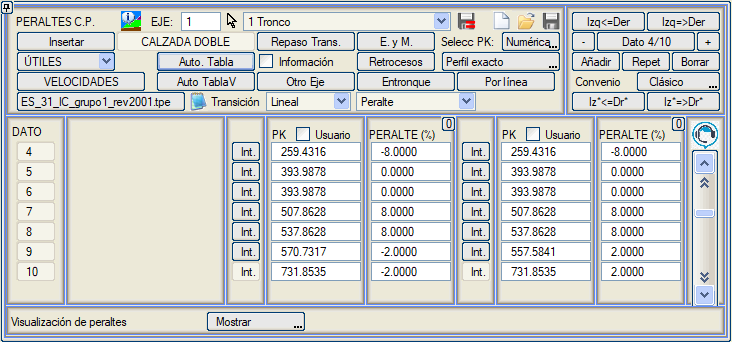
İletişim kutusu aşağıdaki olanakları sunar:
Deverleri uyguladığımız noktanın görüntülenmesi için, her iki tarafın mevcut verilerinin KM'siyle çakışan vurgulanmış bir çizgi ekranda gösterilir: 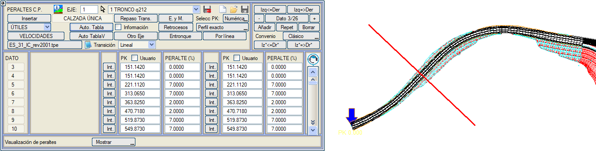
Kurp sihirbazı Bir .tpe tasarım tablosu kullanılarak bir dever diyagramı girildikten sonra, simgesini kullanarak erişebileceğimiz Kurp Sihirbazını kullanabiliriz. 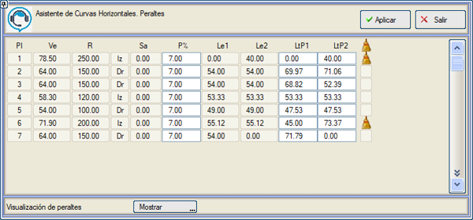
Bu araçla, kurplara veya some noktalarına göre düzenlenmiş bir dizi veri gösterilir: Ve (özel hız), R (kurp yarıçapı), kurp yönü, Sa (genişletme) ve Le (klotoidlerinin uzunluğu). Ayrıca, bu pencereden her kurp için iki ayrı veri belirleyebiliriz: P% (kurp deveri) ve LtP (dever değeri ile sıfırdan geçişi arasındaki geçiş uzunluğu). Genişlikler için benzer bir araç bulunmaktadır. Dever Tablosunun Yorumlanması. İspanyol Yönetmeliğinin Uygulanması Genel olarak, dever dairesel kurpta sabit kalır [EC'den (spiral-kurp) CE'ye (kurp-spiral)]. Bu noktadan itibaren, dever, bir sonraki aliymanın başlangıcındaki klotoidin sonsuz yarıçaplı noktasına [ET (spiral-teğet)] kadar sıfır devere doğru doğrusal olarak değişir: 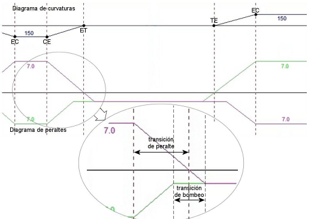
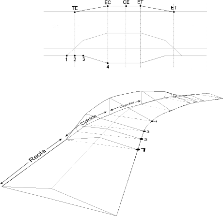
Bu, demiryollarında her zaman böyledir, ancak karayollarında, platformdaki suyun tahliyesini kolaylaştırmak için, aliymanlara %2 veya %2.5'lik bir enine eğime sahip çift eğimli çatı şekli (çatı eğimi olarak adlandırılır) verilir. Bu durumda dever, kurp deveri p'den (CE) klotoid boyunca sıfıra doğru doğrusal olarak düşer; ancak iki platformun deverinin çatı eğimi değerinden (%2 veya %2.5) geçtiği noktada, kurp içindeki platform deverini sabit tutarak dönmeyi durdurur, diğer platform ise doğrusal olarak dönmeye devam eder, dever geçişini bitirmek için öngörülen noktada (ET) sıfır deverden geçer ve çatı eğimini oluşturmak için aynı hızda dönmeye devam eder. Dever diyagramının bu bölgesi, çatı eğimi geçişi olarak bilinir. Bir platformun sabit çatı eğimi değerine (Bom) sahip olduğu ve diğerinin +Bom ile –Bom arasında doğrusal olarak döndüğü, dever geçişlerinin sonundaki nokta etrafında simetrik bir bölgedir. Bu bölgede dever küçüktür ve suyun tahliyesi zor olabilir. Farklı yönetmelikler, .tpe dosyalarında kontrol parametrelerinde toplanan ve aşağıda açıklanan hafif nüanslar uygular, referans olarak İspanyol yönetmeliği 3.1 IC'nin hem Grup I hem de Grup II karayollarına uygulanabilen ES_31IC_rev2001.tpe tablosu alınmıştır. Dosya, her yarıçap için metre cinsinden % olarak dever değerlerini içeren ve azalan yarıçap değerlerine göre sıralanmış bir p-r tablosuyla başlar. İlk veriden (3500 m) daha büyük veya eşit yarıçap için, zaten neredeyse bir aliyman olduğu düşünülerek çift eğimli çatı eğimi uygulanır. p-r tablosunun sonuna kadar ikinci satırdan itibaren her bir sonraki satır, birinci sütundaki deverin ikinci sütundaki değerden büyük veya eşit yarıçap için uygulanacağını belirtir (örneğin 1700 > R > 1600 için dever %2,59'dur). Bu tablo, planda küçük yarıçaplar kullanılmışsa "makul" değerler ataması için norm dışı değerlere kadar aşağıya doğru ekstrapole edilmiştir. Büyük yarıçaplarda çatı eğimi uygulamayan yönetmelikler için, tablonun ilk yarıçapı çok yüksek bir değere (örneğin 90000) ayarlanır. Dosyanın geri kalan verileri, farklı yönetmelikler için veya plan norma uyularak çizilmediğinde istisnalardaki davranış için hesaplama kontrol parametreleridir. # ile başlayan satırlar yorumdur. Takip eden parametrelerden birinin etkisini, birinci sütuna # karakteri koyarak iptal edebilirsiniz. AC_gen komutu, deverlerin tasarımı için gerçek genişlik diyagramı yerine genel sekmede tanımlanan taşıt yolu genişliklerini kullanmayı sağlar. Inter 0.1 komutu, önceki tablodaki değerler arasında doğrusal enterpolasyonu ve yuvarlamayı (0,1 için ondalıklara) etkinleştirir. Örneğin, R=1600 için, p=%2.6: # enterpolasyon ve yuvarlama (0.1=ondalıklar)
# ------ ---- Inter 0.1 yorum satırı yapılırsa enterpolasyon yapmaz Ayrıca şu değişken de eklenebilir: Inter M 0
Böylece, eğer Inter M'den sonra 0 belirtilirse, yuvarlama en yakına yapılır ve 1 belirtilirse yuvarlama yukarıya doğru yapılır. Bom 2.0 komutu, aliymandaki çatı eğimi için dever değerini belirtir. Demiryollarında Bom 0.0 belirtilecektir: # aliymandaki çatı eğimi değeri (2 - 2.5)
# ------ ---- Bom 2.0 Maxp 7.0 komutu, kurptaki maksimum deveri belirtir. Eğer 5.0 değeri ayarlanırsa, tablo 5'ten büyük dever değerlerine sahip olsa bile, sonuçta ortaya çıkan maksimum dever %5 olacaktır (yarıçap 600'den küçük olsa bile). # kurptaki maksimum dever (7 - 10)
# ------ ---- Maxp 7.0 Sbo 0.0 komutu, S şeklindeki bir kurpta iki klotoidin birleştiği sonsuz yarıçaplı noktada uygulanan dever değerine atıfta bulunur. Drenaj kritikse %2'ye ayarlanabilir: # S klotoidlerinin sonsuz noktasındaki dever
# (0 - 2) # ------ ---- Sbo 0.0 Lmcur 30.0 komutu, bir dairesel kurp planda 30 m'den daha az bir uzunluğa sahip olduğunda, some klotoidlerinde olduğu gibi sıfır uzunluğa kadar olan durumu düzeltir. Kurp deveri, önceki ve sonraki klotoidin bir kısmını kullanarak 30 m boyunca korunur: # some klotoidlerinde veya kısa kurplarda
# minimum sabit dever uzunluğu # ------ ---- Lmcur 30.0 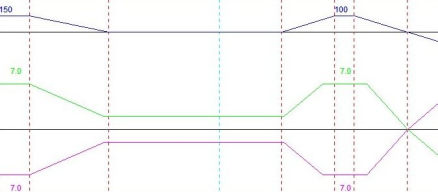
Teorik olarak klotoid, kurp yarıçapı büyük olduğunda, deverin çatı eğimi değerine sahip olduğu değerden büyük veya eşit olduğunda (R>2500) kaldırılabilir, ancak ikincil yollarda, rehabilite edilen yollarda, kurp deveri çatı eğiminden büyük olsa bile güzergahta klotoidler kaldırılır: # klotoidsiz aliyman-kurp geçişinin minimum
# uzunluğu. Aliymandaki kısım (daha az dever) # uzunluk = L0r + L1r * kurp_dev Rmtr 20.0 0.0 Bu durumda dever geçişi kısmen aliymanda ve kısmen kurpta yapılır. Dever geçiş uzunluğunun aliymanda yapılan kısmı, kurp deverinin de dahil olabileceği doğrusal bir fonksiyonla hesaplanır: Uzunluk=L0r+L1r*kurp_dev
burada L0r ve L1r katsayıları şu satırda verilir: Rmtr 20.0 0.0
Benzer şekilde, kurptaki kısım şu şekilde hesaplanır: # klotoidsiz aliyman-kurp geçişinin minimum
# uzunluğu. Kurptaki kısım (daha fazla dever) # uzunluk = L0c + L1c * kurp_dev # ------ ---- ---- Cmtr 00.0 0.0 Bu değerlere göre (Rmtr = 20 m ve Cmtr = 0 m), geçiş tamamen aliymanda, kurp deverine bağlı olmayan 20 m'lik sabit bir uzunlukta yapılır. Klotoidsiz kurplarda dever geçişi. CmtrIP/RmtrIP veya CmtrLt/RmtrLt veya CmtrK/RmtrK gibi komutlar kullanıldığında, Cmtr/Rmtr komutları aynı anda kullanılabilir. Her kurpta, daha uzun bir geçiş uzunluğu gerektiren komut kullanılacaktır. Çatı eğimi geçişinin uzunluğu prensipte +Bom'dan -Bom'a kadar olan rampanın uzunluğu ile dever geçişiyle aynı rampayla belirlenir, ancak düşük deverler ve uzun klotoidlerde, büyük yarıçaplı kurplarda olduğu gibi, rampa yumuşaktır ve çatı eğimi geçişinin uzunluğu büyüktür. Çatı eğimi geçişinin maksimum uzunluğu Klmbom sabitiyle kontrol edilebilir: # çatı eğiminden küçük deverli kesimlerin sınırı (5.2 I.C.)
# kırmızı kot < mras ise çatı eğimi geçişinin maksimum uzunluğu. # eğer çatı eğiminden küçük deverli kesim daha uzunsa # Mlbo'dan, Lbo metrede çatı eğimi dever verisi eklenir. # Mlbo = 0.0 (veya satır yorumlu) kontrolü iptal eder. # mras = 0.0 her zaman kırmızı kota bakılmaksızın kontrol eder. # Lbo (<= Mlbo) çatı eğiminden küçük deverli bırakılan uzunluk. # Mlbo mras Lbo # ------ ---- ---- ---- Klmbom 20.0 0.00 20.0 Eğer boyuna eğim mras'tan küçükse (mras = 0 her zaman anlamına gelir) ve çatı eğimi geçişinin uzunluğu Mlbo'dan (Albo = 20 m) büyükse, bu geçiş Lbo (Lbo = 20 m) uzunluğuyla sınırlandırılır: 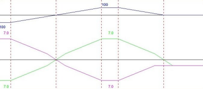
Krasper komutu, kullanıcı tablodan dever uyguladığında, çatı eğiminden daha düşük bir dever değeri uygulanan, belirli bir değerden (varsayılan %0.5) daha düşük kırmızı kotlu bölgeleri kontrol etmeyi ve kullanıcıyı uyarmayı sağlar. Göreceli kenar eğimi (ipmax), dever geçişi boyunca dönme ekseni ile platformun en uzak kenarı arasındaki boyuna eğim farkıdır. Maksimum değeri ipmax, belirli bir geçiş uzunluğu ve genişlik için ulaşılabilecek maksimum deveri sınırlar: Dever=uzunluk*ipmax/genişlik
İspanyol Yönetmeliği 3.1 IC'de ipmax = 1.0'dır: # Maksimum göreceli kenar eğimi, klotoid kısaysa
# ulaşılabilecek deveri sınırlar. # ipmax = 1.8 - 0.01 * Vp (proje hızı 80 için 1.0) # dever = uzunluk * ipmax / genişlik # ----- --- # ipmax 1.0 Daha önce belirtildiği gibi, çatı eğimi geçişi, prensipte klotoidin ve aliymanın teğet noktası (ET) olan deverin sıfır olduğu nokta etrafında simetrik bir uzunlukta yapılır, ancak yönetmeliğe göre bu nokta değişebilir. Trbo parametresi bunun nasıl yapıldığını belirtir: # Çatı eğimi sıfırlanmasının kontrolü:
# - çatı eğimi geçişi klotoid içinde (0) # - veya yarısı içeride yarısı dışarıda (1) # - tamamı aliymanda (2) # - Bolivya stili (3). 1 gibidir; ancak aliyman çok kısa olduğunda # platformlardan birinin çatı eğiminin diğeriyle çakışmasına izin verir # ------ ---- Trbo 1 Aşağıdaki değerleri alabilir: Trbo=0: Çatı eğimi geçişi klotoid içinde:
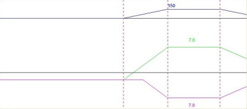
Trbo=1: Yarısı içeride ve yarısı dışarıda (İspanyol Yönetmeliği 3.1 IC):
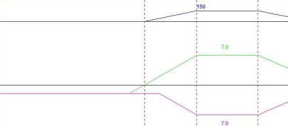
Trbo=2: Tamamı dışarıda, aliymanda:
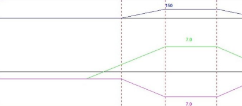
Trbo=3:
Bolivya yönetmeliği stili. 1 gibidir ancak aliyman çok kısa olduğunda platformlardan birinin çatı eğimi geçişinin diğeriyle çakışmasına izin verir:
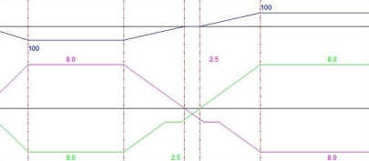
Çatı eğimi geçişi demiryollarında hesaplanmamalıdır (A=0). Karayollarında, en azından iki yönlü tek platformlu yollarda, A=1 yapılmalıdır. S kurplarında, aliyman kısa olduğunda (<150 m), dever geçişi +Bom'dan –Bom'a sınırlı bir uzunlukta (400 m) aliyman merkezli olarak yapılır. Dever geçişinin geri kalanı, klotoid olup olmadığına bakılmaksızın dairesel kurp girişlerine kadar doğrusal olarak yapılır. C kurpları arasındaki kısa aliymanlarda (<220 m) çatı eğimi geçişi yapılmaz: # "C" kurpları (ovaller) arasındaki kısa aliymanlarda Çatı Eğiminden Kaçın.
# (YÖNETMELİK 3.1 IC Ara 1996, Nis 1997). # Eğer aliyman uzunluğu tanımlanandan daha az ise, # çatı eğimi yerine çatı eğimi değerinde ve kurpların # dönüş yönüne göre bir dever kesimi bırakılır. # Bu devere geçiş, klotoid çatı eğimi deverine # karşılık gelen yarıçap değerine ulaştığında klotoid içinde kesilecektir. # Eğer iki klotoidden biri (veya ikisi de) eksikse, Rmtr # uzunluğunda bir geçiş denenir; eğer kalan aliyman kontrol edilen # uzunluktan daha kısa ise, çatı eğimine düşülmez, geçiş # ilgili noktada çatı eğimi değerinde durdurulur. # Ovallerde Çatı Eğiminden Kaçın. Maks. Aliyman Uzunluğu. #--------------------------- --------------- EBO 220. Dever, dairesel kurptan düşer ve klotoidin Bom değerindeki yarıçaptan geçtiği noktada, kurplarla aynı yönde Bom değerinde dever uygulanır ve bir sonraki klotoid üzerindeki eşdeğer noktaya kadar sabit tutulur. Bu noktadan itibaren ikinci kurba kadar dever geçişi devam eder. 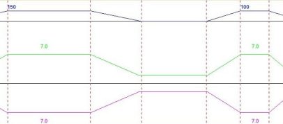
Eğer iki klotoidden biri veya ikisi de eksikse, Rmtr uzunluğunda bir geçiş denenir. Eğer kalan aliyman kontrol edilen uzunluktan daha kısa ise, dever dönüşü Bom değerine ulaştığında durur ve bir sonraki kurba girerken eşdeğer noktaya kadar kurp içine doğru sabit kalır: Belirlenen, geçiş klotoidinin, kurp deveri çatı eğimi değerine sahip olduğunda (R > 2500 m) kaldırılmasıdır, ancak eğer klotoid daha büyük deverli kurplarda (R < 2500 m) kaldırılırsa, geçişin bir kısmı veya tamamı aliymanda yapılmalıdır. Eğer kurp ve karşı kurpta bir veya iki klotoid eksikse, ilgili geçiş aliymanda yapılmalıdır, ancak aliyman olmadığından, dever geçişi kendi kurpuna aktarılır: # Yeni yönetmeliğe uyarlanmış geçişler. Belirlenen, geçiş klotoidinin
# kurp deveri çatı eğimi değerine sahip olduğunda kaldırılmasıdır; ancak # eğer klotoidi daha büyük deverli kurplarda kaldırırsak, dever geçişlerinin # bir kısmını (veya tamamını) aliymanda yapmalıyız. Eğer kurp ve karşı kurpta # bir veya iki klotoid eksikse, ilgili geçiş aliymanda yapılmalıdır; # ancak aliyman olmadığından, dever geçişi kendi kurpuna aktarılır #---------------------------------------- # Yeni Kısa aliymanlı C kurplarında, dever klotoid boyunca, klotoidin sonsuz noktasında çatı eğimi değerine ulaşana kadar azaltılır. (Daha önce bu değere, klotoidin çatı eğimi deverine karşılık gelen yarıçapa ulaştığında ulaşılıyordu) EBOM 3 (Ovallerde Çatı Eğiminden Kaçınma Mod 3) komutu eklenir. Hızlara Göre Tanımlanmış Deverler (.tpv) DEVERLER menüsüne aşağıdaki seçenekler dahil edilmiştir:
Aynı seçenek demiryolları durumunda da mevcuttur, burada ayrıca program kütüphanesiyle dağıtılan birkaç .tpv dosyası da kullanılabilir. Otoyollarda çift dever veya bağımsız çift dever 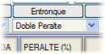Kanada'daki Quebec gibi bazı eyalet veya bölgelerin yönetmeliklerinde kullanılan bu seçenek, deverlerin aşağıdaki şekilde uygulanmasını sağlar:
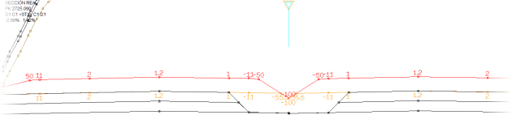
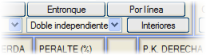Başka bir seçenek Bağımsız Çift Dever tanımlamaktır: İç platformlar için farklı bir dever diyagramı tanımlamayı sağlar. Bu durumda, iç platformların dever verilerini düzenlemek için İç kutucuğu belirir. Ayrıca, sadece belirli kesimlerde özel bir çift dever tanımlamak istediğimiz yollarda tek dever düzenini simüle etmemizi sağlayacak Sol => İç Sol ve İç Sağ <= Sağ araçlarına da sahip olacağız. İç dever diyagramlarına eklenen KM'ler, enkesit enterpolasyonu için olaylar tarafından da kullanılır. Genişletme ve İyileştirme Projeleri için Dever Optimizasyonu [G. ve İ.] düğmesiyle ilişkili seçenek, genişletme ve iyileştirme projelerinde, her enkesitte mevcut platformun deverini hesaplayarak enkesitlerden elde edilen dever diyagramını atamak için kullanılır. Diğer Ülkelerin Dever Yönetmelikleri Kütüphanede, diğer ülkelere uygulanabilir ve özel komutlar kullanan çok sayıda yönetmelik bulunmaktadır. Örneğin, Fransız yönetmeliği için, dever ve çatı eğimi arasındaki geçişlerin maksimum uzunluğunu deverlerin cebirsel farkına göre sınırlayan bir komut eklenmiştir (Lmta komutu): # Deverden çatı eğimine geçişin maksimum uzunluğu, deverlerin cebirsel
# farkıyla orantılıdır (Fransız Yönetmeliği ICTAAL) # Uzunluk = K * |p2-p1| # ----- ---- ----- Lmta 14.0 Polonya dever tablosu, farklı tasarım hızları için farklı değerler kullanma imkanı sunar. Ayrıca, bazı parametreler genişliğe veya proje hızına göre değişebilir. Portekiz yönetmeliğini içeren tablolar, kurp içindeki deverin nominal değere ulaşmadan önce (kurp başlangıç noktasındaki deveri azalttıktan sonra) maksimum artışını belirten dPipmax parametresini kullanır. Bir tabloda ayrıca, çatı eğimi değerinin altındaki deverli kesimlerin maksimum uzunluğunu kontrol etmek için Klmbom kontrolü de etkindir. |